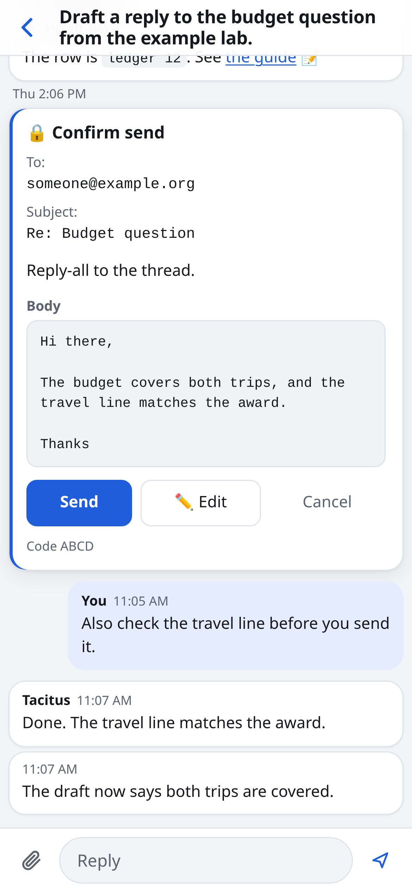

An executive assistant you run yourself
Email, scheduling and paperwork, off your plate.
Write to it from your phone as you would to a colleague. It drafts replies in your voice, finds meeting times on your real calendars, fills in forms and keeps track of what you owe to whom.
- Runs on a computer you own
- No Tacitus service holds your mail
- Nothing goes out until you tap
Every exchange on this page comes from one professor's live install, March to October 2026. Names and places are changed, and long messages are shortened.
A Doodle poll for a 90-minute focus group. Max sent it, and answers are due Fri Oct 23. One of the 10 slots is clear on your calendar.
✓ 1 slot is free. I will mark it available:
- Wed Nov 4, 11:00 AM to 12:30 PM. It overlaps a seminar, but that entry is a note and does not block you.
△ 3 slots need your decision:
- Fri Oct 30 at 9:30 AM: you would move two 1:1s.
- Wed Nov 4 at 8:30 AM: it starts before your 9:00 working hours.
- Fri Nov 6 at 12:00 PM: your Friday hours end at 11:45.
✗ 6 hard conflicts. I will mark them unavailable: all three Oct 28 slots (you travel), Nov 4 at 8:00 (school drop-off), Nov 5 at 2:00 and 2:30 (your lecture).
Which of the 3 do you want me to add? You can also say "overbook all" or "keep all."
Install
Set it up once on a computer you own. Then it lives on your phone.
Tacitus brings its own chat app. There is no chat service to sign up for and no account with anyone. You open it on your phone, add it to the Home Screen, and from then on it works wherever you are.
- Run the installer on an always-on Linux or Mac computer. It checks what is missing, installs Claude Code and opens setup.
- Answer setup from your phone or laptop. One screen per topic, in plain words, until the health check is green. It stops only for a password, a browser sign-in or your phone.
- Open the chat and add it to your Home Screen. It opens like an app. New cards, messages and alerts arrive as notifications while it is closed.
- Leave the house. Tap Set up this phone once. The phone makes its own keys, you approve it by matching a six-digit code, and the app checks every file it runs against your computer's signature.
You need
· A Claude Pro or Max subscription, or a ChatGPT subscription that includes Codex · A Microsoft 365 account and an app registration from your IT group (the longest wait) · Optionally, Google accounts for calendars and Gmail drafts · Optionally, a GPU and an open model to read the mailYou getAn assistant on your Home Screen that answers to you alone, on a computer you control.

# on the computer that will run it git clone https://github.com/arpg/tacitus.git ea-system cd ea-system && ./install.sh # ./install.sh --check only lists what is missing. # Updates arrive on their own: a signed release, # applied when nothing is running.
The install guide walks through it, with the twelve steps that are yours. The request for your IT group lists the permissions and the data flow.
It reads the night's mail.
Plain code merges the inbox, the calendars and the list of what you owe. The model judges only what is left.
A briefing is waiting.
What needs you today, which replies are already drafted, which threads have waited too long.
You write to it like a colleague.
One conversation per request. A room of its own for a big project.
Send. Create. Reschedule.
Each is a button on a card. The model has no way to press it.
Waits for your tap
- 🔒Sending any email
- 🔒Inviting people to a meeting
- 🔒Moving or cancelling a meeting
- 🔒A send scheduled for later
- 🔒Deleting an email
- 🔒Publishing a website
Does on its own, then tells you
- ·Drafts in your mailbox, seen by no one
- ·Tentative holds on your own calendar
- ·The list of what you owe to whom
- ·Filing the mail you told it to file
✉ I made 10 reply drafts. The Send cards are in your DM:
- Sam and Avi: we meet at the lab Thursday at 10:00. The draft asks Sam to confirm access and gives your full name for the front desk.
- Rob and Eric: happy to chat. The draft offers Fri Oct 30, 10:30 or 11:00. This Friday has no open time.
- Mara: you travel early next week, so the draft offers Thu Oct 29 at 9:00, 9:30 or 11:00.
- Kevin: he meets Cole first. The draft offers you on Mon Nov 2 at 2:15 or 2:45, or Tue Nov 3 at 10:45.
- Mari: yes. I found no reply from you on this, so it was not done before.
- Yue, Albert, Deven, Nikhil and Greg: as you said.
When you tap Send, the item closes and the thread is archived, as you asked.
✓ Done now: Paul and Sam D closed and archived. Mel archived. Albert: a follow-up due Nov 2, waiting on the team forming.
✓ You sent all 10. Each send closed its item and archived its thread. Your edits went out too: Albert's note copies Toby and says mid-November, and Mara got only 11:00. Albert already said yes, so I moved his follow-up to Nov 16.
📅 Kara. You have no meeting with her in the next month. I checked her free/busy from Oct 21 to Nov 6. The first time you are both free is Mon Nov 2, 2:15 to 2:30 PM, online. The Create card is in your DM.
I staged a move of tomorrow's 1:1 with Noah (Tue Oct 6, 12:00 MT) to Wed Oct 14, 1:00 to 1:30 PM MT. That is 3:00 PM for Noah. Nothing moves until you tap Reschedule.
Why Wednesday: Noah wrote that Monday Oct 12 is a holiday and his school runs its Monday classes on Tuesday, so I kept off both days. Inside his 9 to 5 Eastern hours, Wednesday was the only day with free time.
Only this meeting moves. The Nov 3 meeting in the series stays as it is.
- event
- 1:1 with Noah
- from
- Tue Oct 6, 12:00 MT
- to
- Wed Oct 14, 1:00 to 1:30 PM MT
✉ I drafted a reply to Noah in his thread. The Send card is in your DM. It offers Wed Oct 14, 3:00 to 5:00 PM ET, and Tue Oct 13, 2:00 to 3:30 PM ET.
△ The Tuesday times overlap your lecture prep block. If you want to keep that time, tell me and I will remove Tuesday from the note.
The note says the invite already moved, so approve the Reschedule before you send it.
Here's my dictation.
I've only known Leo for a little bit. He joined the program this year. But in the past two and a half months, he and I have worked together on this belief consistency problem…
[1,100 more words of dictation]
📝 Leo's letter is ready. It compiled to three pages first, so I cut it. It is on your letterhead and fills exactly two pages, with your signature and bio at the foot of page 2.
~/.ea/letters/leo-rec-fellowship.pdf
It follows the order of the earlier letter, with more evidence, because this one is for a fellowship.
"He had already read the paper and came with several intelligent questions": no paper noted. Mention which paper from my CV, give the citation. Also "Faculty members receive many notes of interest" is obvious to a panel of faculty. We should say things like "While I receive many inquiries of inbound interest, ..." and elaborate carefully.
Don't use the term "real dialogue." Use "genuine" rather than real.
📝 Version 2 is ready and still fits on two pages.
- The paper is named, with the citation from your CV.
- Inbound interest now speaks from your experience: "While I receive many inquiries of inbound interest in my group's work, a growing share of them now arrive with a polished question that a language model produced from the paper's abstract, and the interest rarely holds up once we talk. Leo's did."
The word "real" no longer appears anywhere in the letter.
I read the four workshop threads. One email is due from you today. The rest is with Kara or with the host.
What you need to do
- 🔴 Reply to Kara today. She waits on you before she answers the host this week. She asks you to sign off on her list of seven and to choose between two candidates. Tell me your picks and I will draft the reply.
- Pre-read. I added it, due Fri Nov 20. If it asks people to fill anything in, it should go out around Nov 13. Nobody owns writing it yet.
Handled by others
- Attendee list: Kara owns it. If she has not written by Oct 28, I will raise it.
- Date: Dec 8, 1 to 5 PM.
Recorded three rules. Agency portal notices leave your briefings. Safety-training mail stays hidden unless the subject says FINAL, OVERDUE or non-compliance. Quarantine digests are never an action item. The related items are closed.
Recorded, and the open intern request is closed under that rule.
Recorded. An item whose email you archived or deleted now closes without a card.
💡 I can hide an email until the day you want it back.
Try: Snooze the email from the parking office until Monday.
It leaves your inbox now and comes back that morning.
Reply more for another idea, not now, or never.
💡 You can add a file or a photo to a message and ask me about it.
Try: Add the PDF, then type: Fill in this form for me.
I read it and do the work: forms, receipts, letters.
Reply more for another idea, not now, or never.
How it works
Five parts, in plain words.
An assistant that reads your mail has to earn the trust. Here is where everything runs, who sees what, and how it stays current. Each part links to the full document.
-
Your computer
Tacitus runs on one always-on Linux or Mac computer that you control. Your rules, the chat history, the list of what you owe and the keys to your mailbox stay there. No Tacitus service holds any of it.
-
The model you choose
Claude Code or Codex does the judgment: the conversation, the hard reply, the plan. It sees the text a task needs. If you host an open model, it can read every email first, and a Settings screen picks which model runs each job. Plain code does the rest, such as reading the inbox and solving for meeting times, with no model at all.
-
Signed updates that apply themselves
Every release is signed. Your computer checks for one each hour, installs it when nothing is running, and confirms that it came up healthy. If it did not, the same job switches back and holds that version. You see one line about it in the next briefing.
-
A sealed connection away from home
Off your home network, the phone reaches your computer through a relay. The phone and your computer seal every message at each end, so the relay carries data it cannot open. It sees which install a message is for, its size and its time. The app checks its own code against your computer's signature before it runs.
-
Open source under the AGPL
Every gate on this page is code you can read. The model runs as its own user, cannot read your mail keys, and cannot change its own code. A hosted relay is the one paid part, and you can run your own.